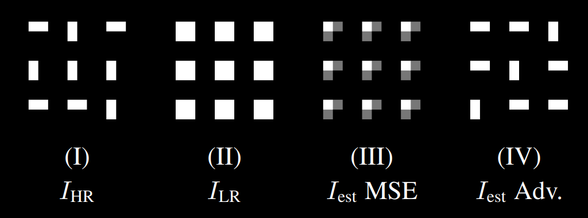
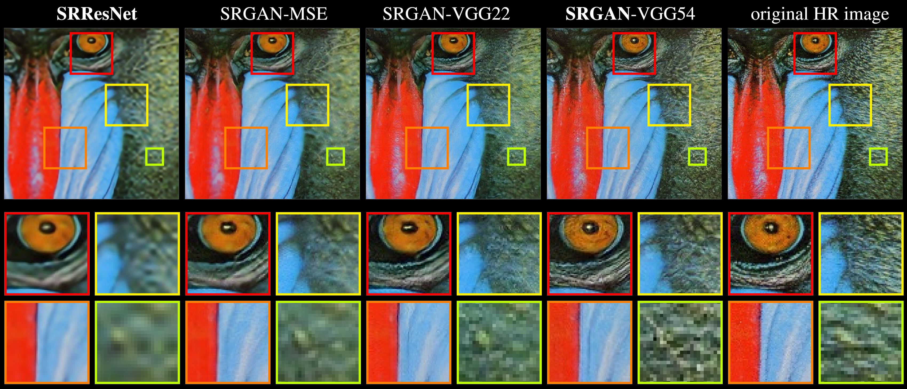
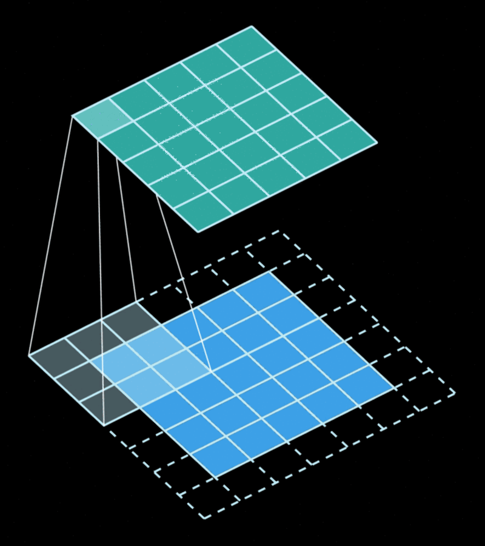
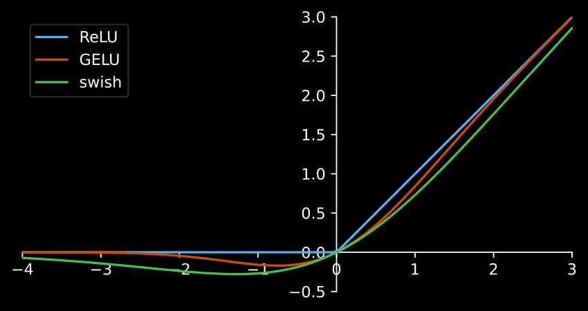
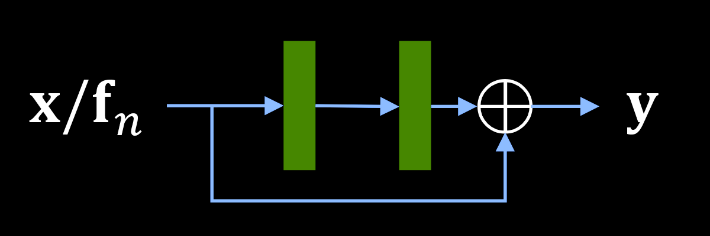
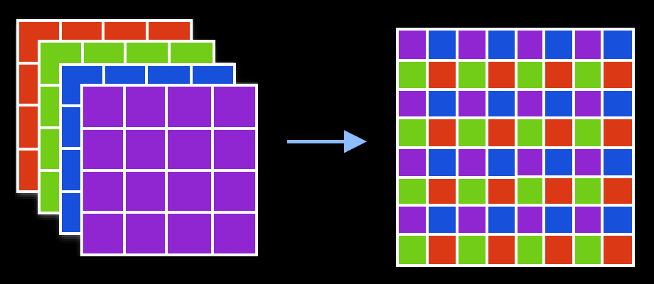
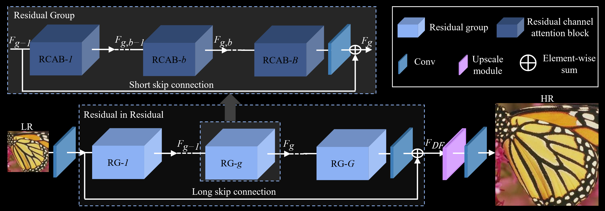
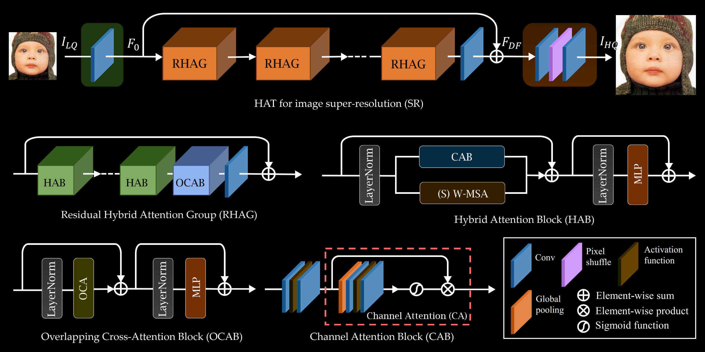

In an age dominated by multimedia consumption, demand for high-quality visual content is rising. However, there's an ever-growing library of content produced in the past targeting lower resolution displays, and factors like the available bandwidth limit the resolution in which modern content can be served.
Image resampling is generally used to map low-resolution content into high-resolution displays, but classic approaches such as bilinear and bicubic interpolation can not synthesise high-frequency information, resulting in images that are perceived as soft or blurry.
Machine learning has eclipsed classical algorithms in computer vision and image processing, showing state-of-the-art performance in several problems including image resampling.
The standard procedure when creating training data is to collect high-resolution reference images and then apply a "degradation model" to artificially create the corresponding low-resolution inputs.
The degradation model essentially defines the "problem" your model will attempt to solve. Since we're talking about super-resolution models, one of the steps is naturally downsampling the images. Many filters can be used to downsample, and you should pick a filter that corresponds to how you want your model to look like. If you pick a filter that blurs the image, like Hermite, then your model will do the opposite (it'll sharpen!).
This is one of the reasons why training super-resolution models is so tricky. You must create training data that matches the content you're actually trying to upscale, but to do that you need to downsample and no downsampling filter is perfect. I like using box for my models, but that's nothing more than personal preference.
You may also want your model to be able to deal with compression artifacts. For that all you have to do is to add compression artifacts to the low-resolution images. As long as you know how to artificially create the problem you're trying to solve, then you can quite literally just add it to your images and your model will attempt to learn how to reverse it (which doesn't mean it'll succeed in a satisfactory way).
But how do we measure whether our model is doing a good job solving the problem? We need a loss function.
A loss function is nothing more than a metric used as our optimisation target during training. When talking about super-resolution models, there are 2 kinds of metrics we can use for this. Distortion metrics and perception metrics.
Distortion metrics focus on measuring pixel distances without worrying too much about how humans perceive different kinds of distortions. Metrics like MAE, MSE, PSNR and SSIM are all distortion metrics. These metrics are often fairly straightforward mathematical functions that simply compute per pixel distances and average them in some way.
Perception metrics attempt to model how humans perceive different distortions, without worrying too much about how individual pixels look. Metrics like LPIPS, DISTS and BRISQUE are all perception metrics. These metrics were originally trained based on human quality scores, but modern variations are all based on extracting features from deep classification models. Think of it this way, a model trained to identify and classify dogs needs to give the same output ("dog") for pictures of different dogs. Therefore, you can leverage this to measure how "similar" 2 images are even when their pixels are completely different.
A few years ago, it was also very common to include adversarial components in an attempt to train more "realistic" models. This was achieved by adding another model to the mix entirely dedicated to judging whether the images you're producing with your generator look "real". This judgement is passed to the generator as a hint of what to do so it can "fool" the discriminator/critic into "thinking" the images are real. The problem with using adversarial losses by themselves is that your generator will have no incentive to generate images that look even remotely close to their respective references, so they were always mixed together with something else.
When trained on distortion losses entirely, super-resolution models will produce very "safe" images that tend to lack some high-frequency components and ultimately look a little soft or devoid of texture. This happens because the "optimal solution" is to be equally wrong towards all possible solutions. When trained with perception losses, which includes adversarial losses, the models can "pick" one of the possible solutions even if it's the wrong one. This can be easily seen in the picture below:

After downsampling the high-resolution image, the resulting low-resolution image has identical squares for all rectangles. With the distortion loss, the best solution is to be equally wrong (and right!) towards all possibilities. With the adversarial loss, the model simply picks one of the possible solutions regardless of whether it's correct. When analysing the same thing on "real images", the difference is perceived as added texture (note how the "fake" texture does not match the texture in the actual reference):

Many blocks are used to build modern super-resolution models, and it's impossible to cover all novel ideas in a blog post like this. However, some ideas have stood the test of time and are commonly found on most models.
The most common building block, of course, is the convolution layer. CNNs have completely changed the computer vision landscape and are still widely used today even taking into consideration the ascension of Transformer models.
The convolution is the operation obtained by "sliding" a filter/kernel through the image computing weighted averages of the area covered by the filter. Each output pixel will contain a value that is obtained by multiplying some input pixels by some weights, and these weights are the same regardless of "where" in the image the filter is.
This gives us a very important property... Convolutions are equivariant in space. This gives them a very strong inductive bias to solve vision problems.

Unlike a normal 2D convolution, which is depicted in the animation above, the "Conv2D" layer is generally done using 3D filters. That's the case because each filter matches the input feature maps in depth, which means they also have 3 dimensions even if they only "slide" through 2 dimensions. naturally, we can use 1x1 convolutions to "combine" the features between different channels without taking spatial information into account, and this is equivalent to a "linear" or "dense" layer. When we apply a different kernel for each channel, we call the operation a "depthwise convolution".
All major machine learning libraries have excellent built-in support for convolution layers. I'll go over a few common parameters and how they affect the operation:
Activation functions are what allow machine learning models to solve complex problems. This is done by putting the data through a non-linear function that transforms it. The most common activation function is the ReLU, but smoother alternatives like the SiLU and the GELU are becoming very popular in recent times.

Skip connections are also found in literally every single modern super-resolution model. Without them, it becomes impossible to train deeper models as things simply become very unstable.
Skip connections can be implemented either via the identity (simply adding the input back to the output of a given block) or via concatenation (taking the input feature maps and "appending" them to the output feature maps). Both options are perfectly valid, but since the identity doesn't modify the shape of the features, it's often preferred.
Short skip connections are those added after a relatively low number of operations, like a few convolution layers for example. These are found on "residual blocks", which are the main building blocks of pretty much any large model. Rather than entirely modifying the input feature maps, creating a whole new output in the process, adding the input back to the output allows residual blocks to simply modify the input feature maps. This can be understood as a conveyor belt where each worker does something to the product being built. Some workers just tighten a few screws, others just plug some cables, etc.

Long skip connections are those added after a relatively large number of operations. On super-resolution models, they can almost always be found linking features maps right after the input to those right before the output. This allows the model to learn "what is missing" in the output, which is the high-frequency components.
Ok, we can reduce the size of the feature maps by increasing the stride in the convolution layer, but how do we increase it? Well... You could do the same with a transposed convolution, which used to be popular in the past, but there's an even simpler operation.
Pixel shuffling, sometimes also called "depth to space", is nothing more than reshaping the feature maps to increase width and height while reducing depth. Say you have 4 channels, you can just rearrange the information so those 4 channels becomes a single channel with 4x as many pixels. Since we can easily control how many feature maps we want to output from a convolution layer (this matches the number of filters), it's trivial to increase spatial size as needed.

This can also be done to the other direction to reduce width and height while increasing depth, which is usually called "pixel unshuffling" or "space to depth", but it is not nearly as common.
Now that the main building blocks have all been presented, how does a modern super resolution model look like?
We start by extracting some features from the input. We then put this data through a series of residual blocks. Finally, we add a long-skip connection to pass the low-frequency information forward, and then reshape the feature maps. It really is that simple!
The following image depicts RCAN, the state-of-the-art in 2018 (7 years ago at the time of writing):

The next one depicts HAT, the state-of-the-art in in 2022 (3 years ago at the time of writing):

The winner of NTIRE 2025 Challenge on Image Super-Resolution (x4), SamsungAICamera, still used the exact same HAT architecture, so it's safe to say this is pretty much still the state-of-the-art today (if it isn't clear by now, I'm writing this in 2025).
Of course, there are many differences between RCAN and HAT. The latter is pretty much an "evolution" of the former in the sense that everything that was present in RCAN is still present in HAT. However, a few new things were also introduced.
Instead of relying entirely on convolutions, HAT also leverages building blocks commonly found on Transformers. If we removed the CAB from the HAB, the resulting block would essentially be a Swin transformer. I'm not gonna go into the specifics here, but the main advantage is that transformers can learn global information much better than traditional convolutions. The vision transformer learns how each patch relate to every other patch in the image. By contrast, convolutions are generally much more localised. You generally have to stack several convolution layers to learn any kind of global information.
HAT combines both convolutions and transformers to hopefully achieve the best of both worlds, and so far it seems to be working. The major downside to transformers is that they're often much slower than simple convolution layers, which means they're only commonly found on big models that do not care about inference performance. And besides, we've been shown time and time again that they're not necessarily required. We've had many papers in other fields showing that pure CNNs are still competitive (see: A ConvNet for the 2020s, ConvNets Match Vision Transformers at Scale).